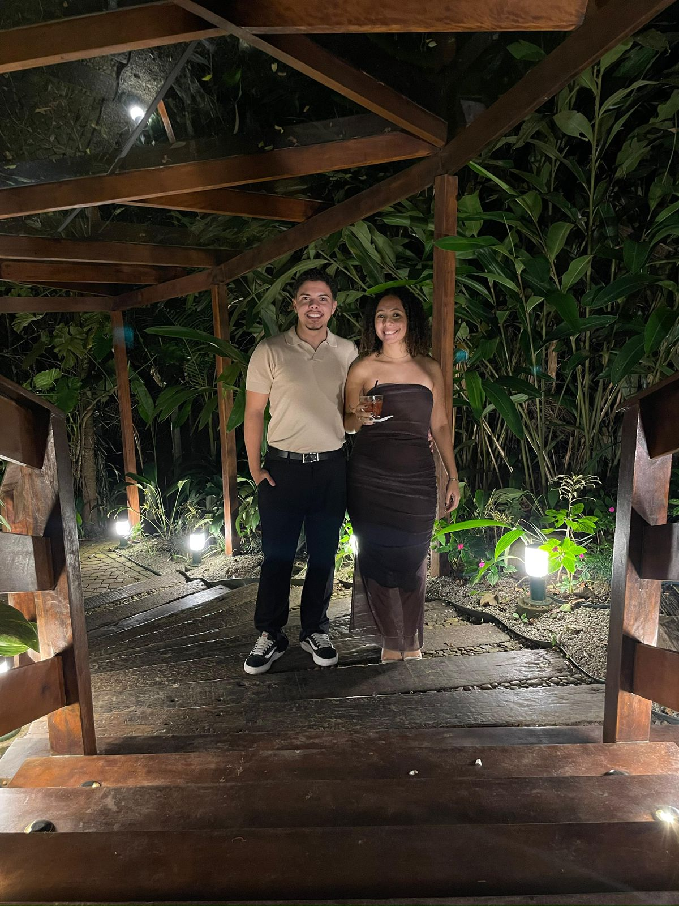

Feliz aniversário!

Feliz aniversário, meu amor. Eu te amo muito.
Hoje queria falar de você, que cada vez melhora. Queria falar um pouco do passado, de como você era uma menina cheia de sonhos: de viajar, ser psicóloga, ser amorosa, e muitas outras coisas. Mas nesses três pontos queria me focar:
Futuro: uma menina que já viajou o país e logo vai conhecer o mundo. Pode parecer futuro, mas com certeza vai se tornar realidade.
Presente: ser psicóloga. Isso já é realidade! De uma simples palestra com os amigos para sua primeira consulta com um paciente. Hoje é real e vai melhorar todo dia.
Passado (e presente, e futuro): o amor que construímos e que cresce a cada dia. Você faz de tudo para melhorar por nós. Por isso eu te amo demais. Cada coisa que você faz é muito importante pra mim, e queria te mostrar isso de uma forma simples.
Eu te amo muito, be!
A.E.